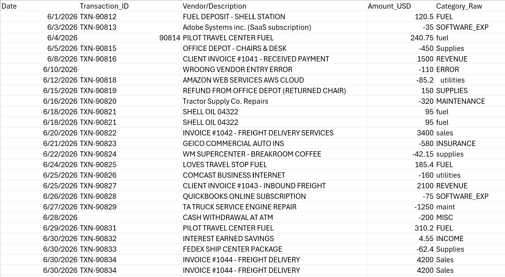
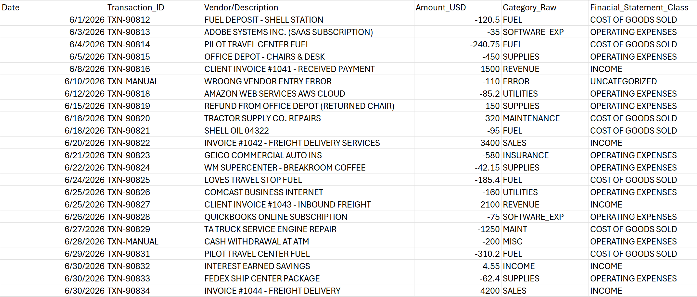

Project Overview
This project demonstrates an end-to-end accounting and data analytics pipeline designed to streamline financial workflows for complex logistics operations. By bridging technical data engineering, meticulous bookkeeping controls, and dynamic business intelligence, raw unorganized fleet expenses are transformed into audit-ready financial records and real-time executive insights.
Raw Unstructured Data

Pipeline Phases
Phase 1: Data Engineering & Sanitization
PythonProcessed high-volume, unformatted logistics data (fuel logs, maintenance receipts, driver payouts). Handled missing values, formatted date schemas, and split combined fields into clean structures ready for accounting software ingestion.

Phase 2: Bookkeeping & Financial Controls
QuickBooks OnlineBatch-imported cleaned records into QuickBooks Online. Applied custom mapping rules to allocate complex split expenses across cost centers, and conducted full monthly bank reconciliations to ensure complete financial accuracy.
Phase 3: Executive Business Intelligence
Power BI & DAXExtracted reconciled general ledger data to construct an interactive Power BI dashboard. Developed dynamic DAX measures to analyze vehicle profitability, operating expense ratios (OPEX), and route-level cash flow trends.